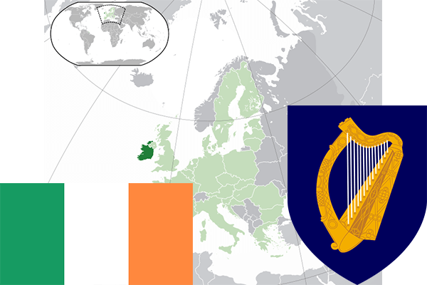

To`liq nomi: Irlandiya
Region: Yevropaning shimoliy-g`arbiy qismi
Qonunchilik shakli: Respublika
Mustaqillik kuni: 6-dekabr 1922-yil (Birlashgan Qirollikdan)
Poytaxt: Dublin
Maydoni: 70 273 km² (dunyoda 117 -o`rinda )
Chegaradosh davlatlari: Buyuk Britaniya
Aholisi: 4 593 100 (dunyoda 121 - o`rinda, 2013 -yil roʻyxat)
Aholi zichligi: 60,3 /km²
Aholining o`rtacha yoshi: 78,0 yil (80,7 ayollar, 75,3 erkaklar)
Rasmiy tili: irland va ingliz tili
Dini: 95% katolik, 5% protestantlar
Pul birligi: Yevro
Telefon prefiksi: +353
Internet domen: .ie
Xalqaro tashkilotlarga a`zoligi: BMT (1955 – yildan), Yevropa Ittifoqi (1973-yildan)
Dengiz va okeanlarga chiqishi: Atlantika okeani va Irland dengizi
YIM: Butun: $ 243,914 mlrd, Jon boshiga $ 58,373 (2015 - yil roʻyxati)
Yirik shaharlari: Dublin, Kork